→ Entender el territorio
→ Detectar qué está cambiando
→ Analizar riesgos y oportunidades
→ Convertir los datos en estrategia
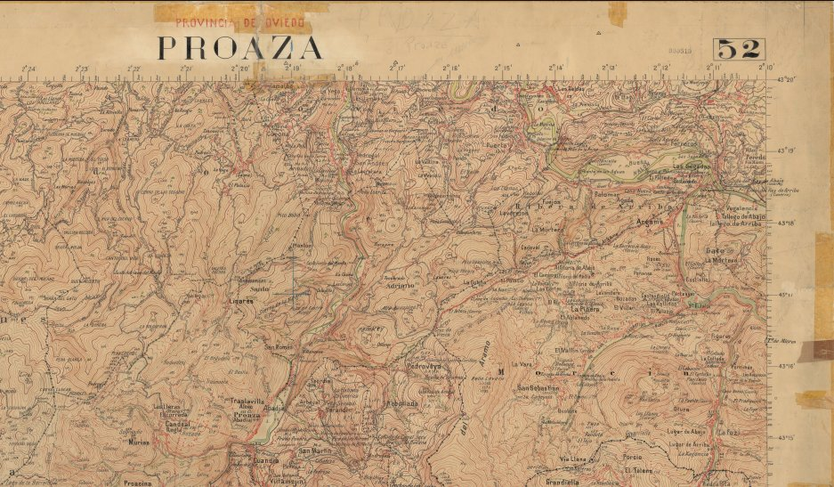
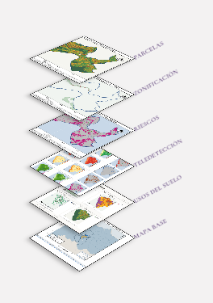
Delimitación, usos del suelo, riesgos, accesibilidad y cambio real sobre el terreno
Convertimos las fuentes oficiales — IGN, IGME, SIOSE, Catastro, MITECO, Copernicus/Sentinel-2 — en diagnósticos territoriales claros, verificables y útiles para ayuntamientos, despachos de arquitectura y paisaje, gestores forestales y proyectos de desarrollo rural. Cada capa se adapta al uso que le vas a dar, ya sea justificar una decisión urbanística, seguir la evolución de un proyecto o documentar una solicitud ante la administración. Y cada resultado se supervisa con criterio de especialista antes de llegar al informe final.
Retrato cartográfico completo de un municipio o comarca: localización, relieve, geología, usos del suelo, población, parcelario, red viaria y zonas protegidas. La capa base sobre la que apoyar cualquier planificación.
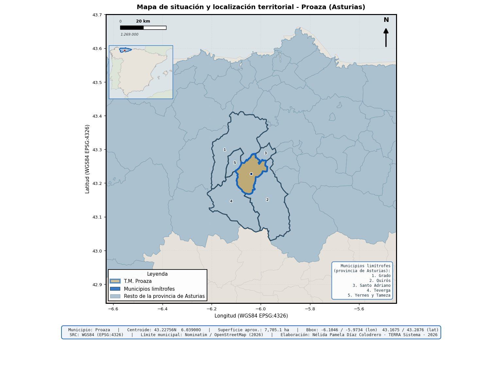
Detección de cambios reales entre dos fechas con índices espectrales (NDVI, NDWI, NDBI, NBR) sobre Sentinel-2: pérdida o ganancia de vegetación, suelo construido nuevo, humedad y severidad de quemas, con umbrales explícitos y síntesis cruzada.
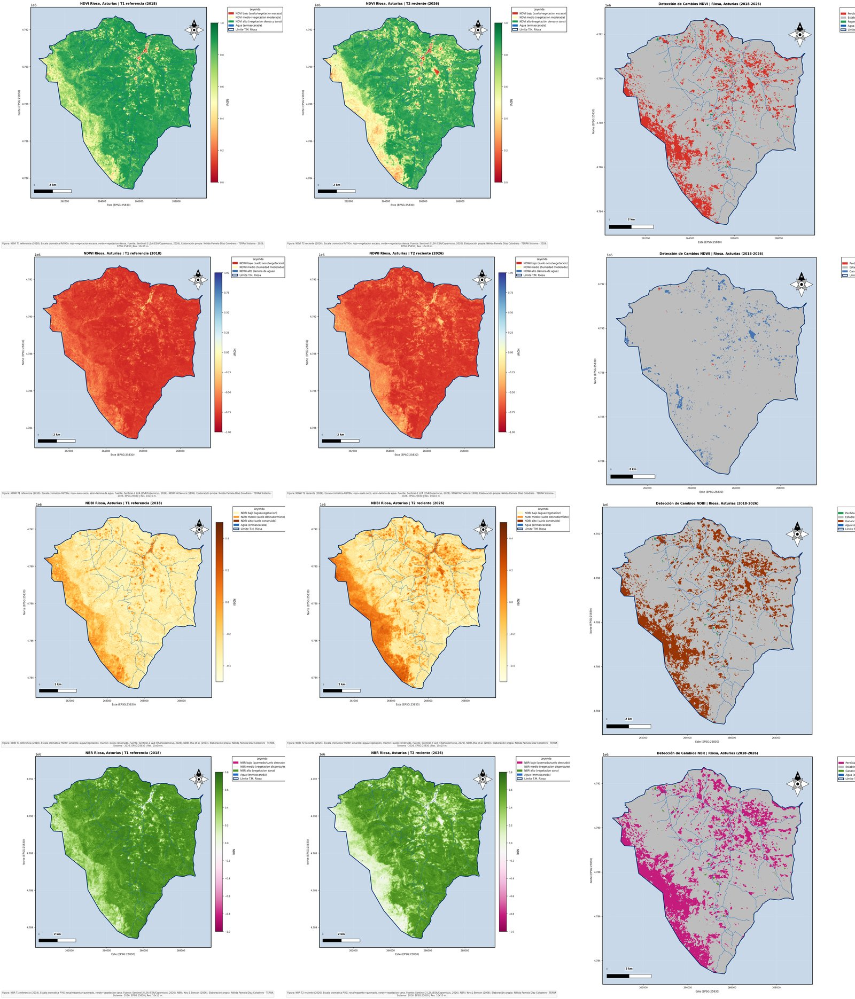
Geoportales listos para publicar en la web de tu ayuntamiento o proyecto: capas activables, consulta de atributos, exportación del mapa a PNG/PDF con escala, leyenda y norte. Sin software SIG que instalar, cruzando incluso capas propias como el SIGPAC frente al NDVI para detectar discrepancias parcela a parcela. También creamos visores a medida de tu territorio, con las capas y funciones que necesites: un archivo HTML autónomo, sin instalación ni conocimientos de SIG, pensado para que un ayuntamiento pequeño pueda consultar y gestionar su propia información territorial.
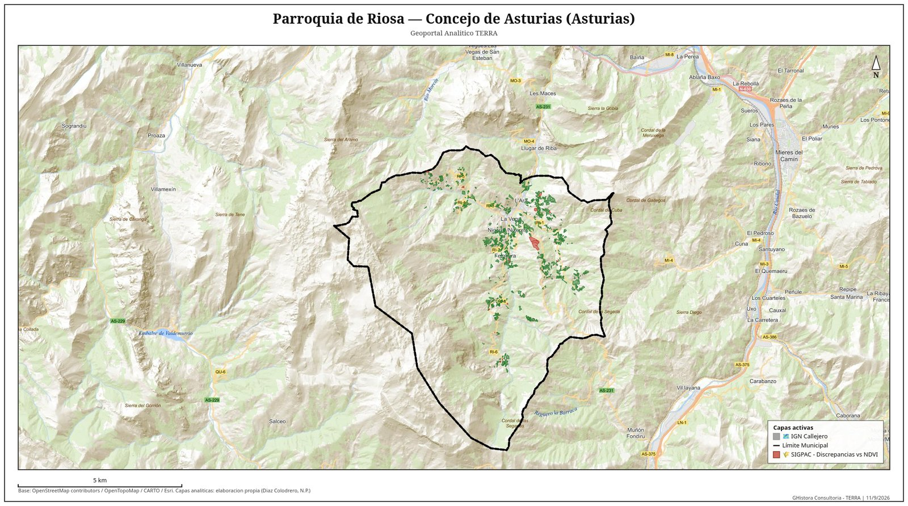
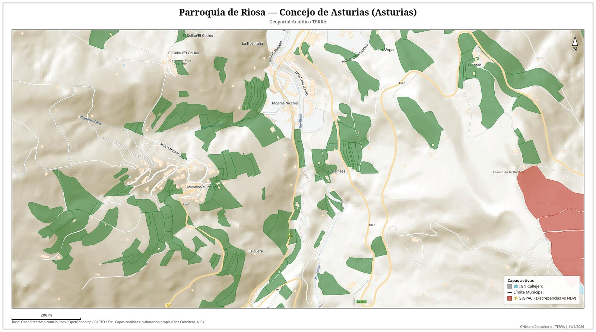
Inundabilidad oficial (SNCZI) cruzada con los usos del suelo reales, para saber qué hay expuesto y no solo dónde llega el agua.
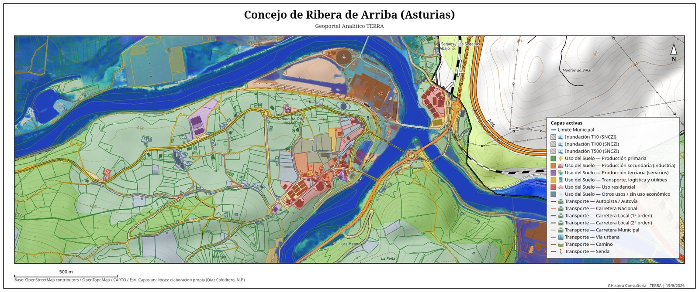
Discrepancias entre el uso declarado y el uso real detectado por teledetección, localizadas dentro de zonas protegidas.
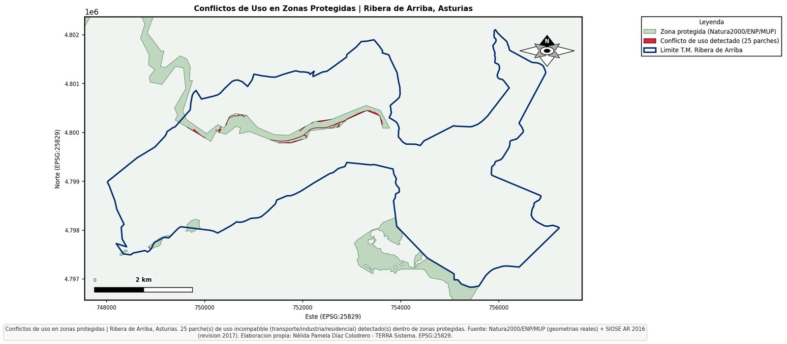
Litología oficial (IGME) para valorar la aptitud del terreno frente a deslizamientos, y el mapa de movimientos del terreno a escala regional que sitúa el municipio en su contexto de riesgo.
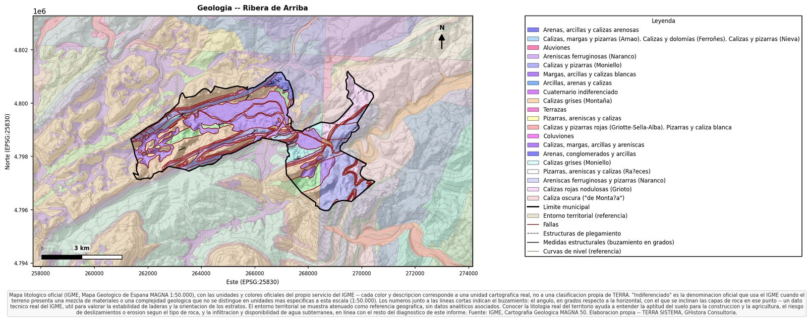
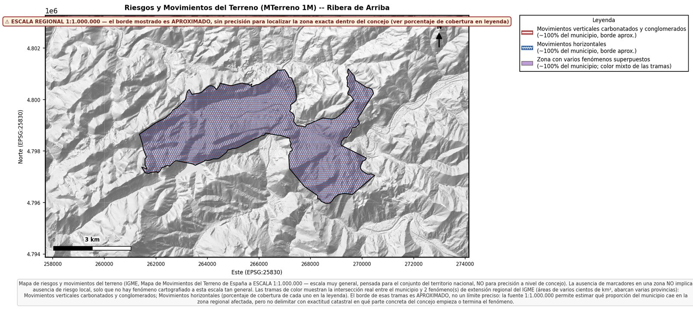
Isócronas reales calculadas sobre la red viaria oficial — no en línea recta — para planificar servicios, emergencias o ubicaciones: tiempos de acceso desde y hacia cualquier núcleo.
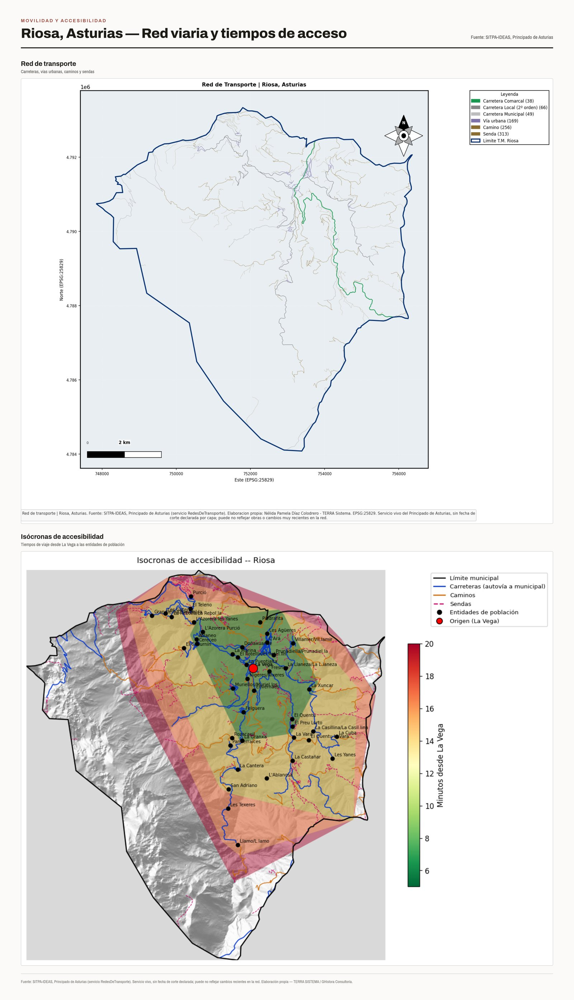
Del mapa a la decisión: primero se cierra el diagnóstico del suelo — conflictos de uso, aptitud agraria, abandono y fragmentación parcelaria — con cifras concretas por municipio.
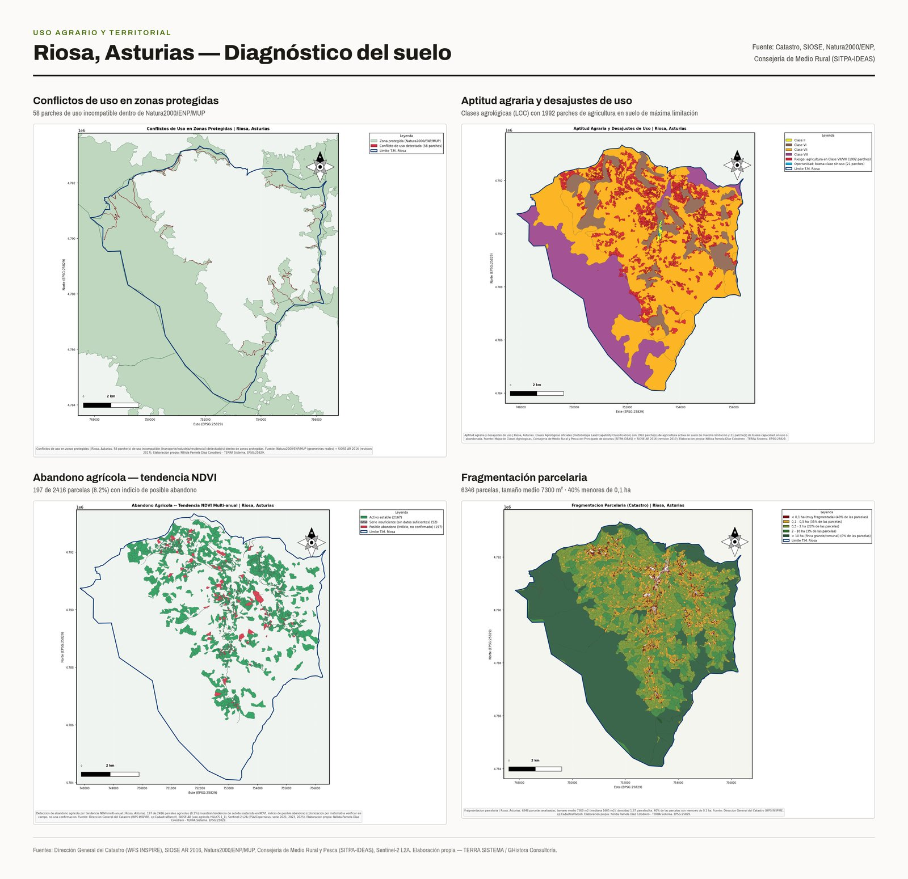
Después, ese diagnóstico se traduce en análisis DAFO y CAME y en un informe técnico en PDF centrado en las líneas de actuación prioritarias.
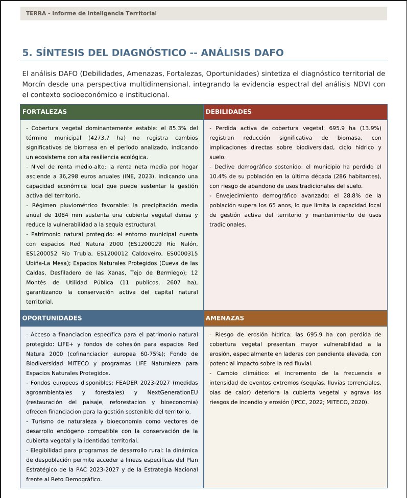
Cada encargo se procesa con TERRA SISTEMA, una herramienta propia de análisis geoespacial, aplicable a cualquier municipio de España a partir de sus fuentes oficiales. El flujo de trabajo es siempre el mismo, y siempre auditable:
Fijación del territorio de estudio y reunión de capas base oficiales: límites administrativos, MDT LIDAR, cartografía topográfica y marco de referencia explícito.
Álgebra de bandas sobre imágenes satélite, cruces vectoriales reales entre capas, cálculos de accesibilidad sobre red viaria y detección de cambios con umbrales definidos.
Ningún resultado sale sin contraste humano: cada mapa se revisa a pie de trabajo y se documenta con fuente, fecha, sistema de referencia y criterio técnico.
Los escenarios que se entregan son proyecciones cualitativas bajo hipótesis explícitas y siempre documentadas: la claridad sobre los límites del análisis forma parte del rigor técnico de cada encargo.
Contexto y localización, relieve, usos del suelo y red viaria. Mapas temáticos en alta resolución e informe resumen en PDF.
Todo lo anterior más geología, parcelario, accesibilidad real, zonas protegidas, teledetección de cambios 2018–2026 y síntesis cruzada. Incluye visor interactivo publicable y análisis DAFO/CAME.
Seguimiento temporal de tu territorio: actualización anual de cambios de cobertura, alertas de nuevos suelos construidos y mantenimiento del geoportal municipal.
Documentación técnica y cartográfica para solicitar ayudas de restauración, mantenimiento o rehabilitación del patrimonio: memorias valoradas, fichas de catalogación y estado de conservación.
Este es el trabajo que se puede ver completo en nuestro portfolio cartográfico: un retrato territorial del concejo asturiano de Ribera de Arriba que combinó fuentes oficiales con procesamiento propio. Algunos resultados, en cifras:
24,7%
de la superficie con señal de pérdida de vegetación leñosa entre 2018 y 2026 (NBR)
6.418
parcelas catastrales analizadas: casi la mitad, por debajo de 0,1 hectáreas
25
focos de uso incompatible localizados dentro de zonas protegidas
Del diagnóstico se derivaron tres escenarios cualitativos — óptimo, tendencial y de riesgo — y las líneas de actuación prioritarias para un concejo que conserva, aún, un margen real de recuperación.
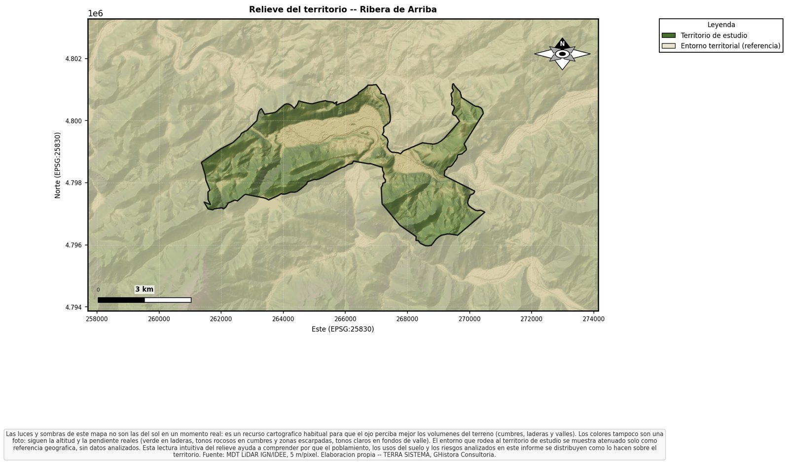
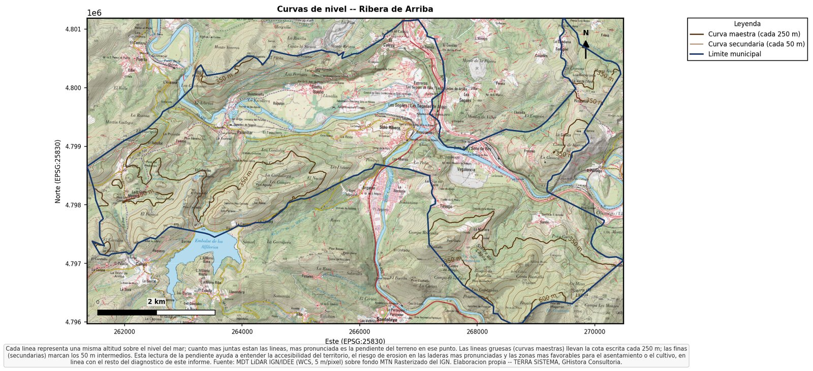
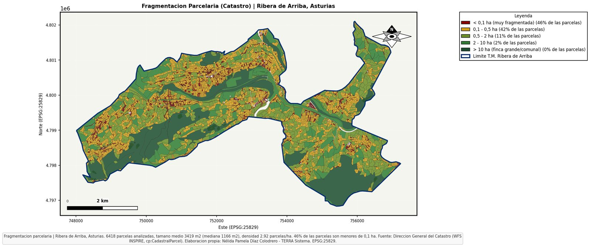
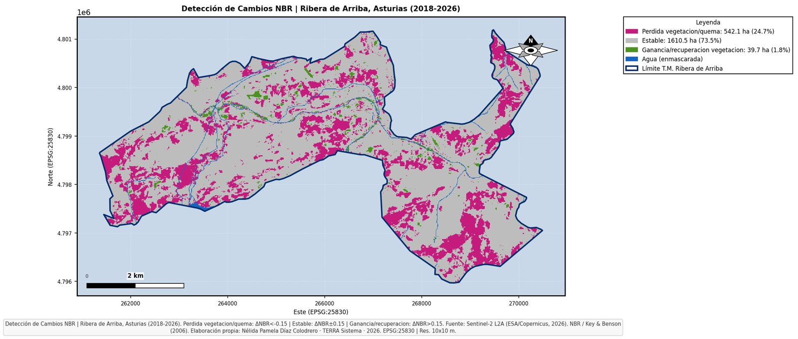
GHistora Consultoría Territorial está dirigida por Nélida Pamela Díaz Colodrero, graduada en Historia por la Universidad de Oviedo y máster en Recursos Territoriales y Estrategias de Ordenación (Universidad de Oviedo / Universidad de Cantabria). El estudio nace de unir dos miradas: la del territorio leído en el tiempo, propia de la historia, y la del territorio medido con precisión, propia de los sistemas de información geográfica. Esa doble lectura hace que cada entregable esté contrastado con criterio experto, capa por capa, antes de llegar al cliente.
Historia y territorio, leídos con el mismo rigor.
TERRA SISTEMA puede aplicarse a cualquier municipio de España. Cuéntanos qué territorio quieres entender y para qué decisión lo necesitas, y prepararemos una propuesta con plazos y presupuesto cerrados.